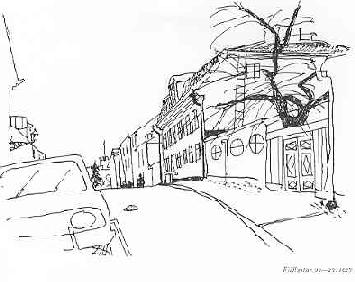

Södermalm i tid och rum
Ur En bok om Stockholm av P.A. FogelströmBoktryckare P. G. Berg på Stigberget
Fjällgatan 25-27 kallas Schinkelska malmgården efter kommerserådet David Schinkel som 1794 köpte och lät bygga om den gård som tydligen fanns på området. Huset är det äldsta på Fjällgatans norra sida och kanske också det vackraste. Och det var detta hus som Anna Lindhagen främst önskade bevara. "Lyckliga människa som ägt denna malmgård", skrev hon (1923). "Lyckliga alla som där fått bo liksom alla i framtiden som få tjusas av denna gårds osedvanligt stämningsfulla belägenhet."
Schinkel dog 1807 och hans son slösade snabbt bort förmögenheten i vilken huset vid Fjällgatan bara var en mycket liten del.
1847 inköptes egendomen av kammarrådet Johan Falkman som dock ansåg att den låg alltför avlägset och därför tio år senare sålde den till boktryckaren P. G. Berg och sjökaptenen Victor Kempff. Kempff var gift med Bergs dotter Maria.
Per Gustaf Berg (1805-1889) var boktryckare, bokförläggare och bokhandlare. Bland hans mest kända utgåvor är Mellins Svenskt pantheon och Ferlins uppslagsverk Stockholm. Berg var också kommunalt verksam, han var ordensbroder och en av stiftarna av Stockholms schacksällskap.
Om livet i huset vid Fjällgatan på 1860- och 1870- talet har kapten Kempffs son Henry (född 1860, senare läkare) berättat, skildringen har lämnats till PAF av doktor Kempffs dotter fru Karin Mathiesen. "Morfar" i denna berättelse är alltså P. G. Berg. "Mormor" boktryckarens hustru Maria Wendela Berg, född Holm. I huset bodde förutom dessa och familjen Kempff också ytterligare en dotter till boktryckaren: Hilma - och hennes son Hilmer.
"På båda sidor om huset fanns ett plank med två stora inkörsportar", berättar Henry Kempff. "Den vänstra ledde in till bakgården, där fanns det vedbod, rader av avträden, hönsgård, duvslag, den stora soplåren samt en rännsten där allt som nu råkade rinna i denna fick hamna nere på grannens, d.v.s. Handelsinstitutets, tomt" (Schartaus handelsinstitut låg då i Fjällgatan 23-23a). "Längst från gatan utåt Strömmen slutade gården med en gräsplan med den tidens obligatoriska lusthus. Här, liksom på så många andra håll på Söder, utgjordes lusthuset helt enkelt av en gammal däckskajuta.
Plankets östra del hade också sin stora inkörsport men dessutom även en mindre dörr för persontrafik. Gick man nu in genom den lilla dörren kom man in på en gård med blomsterrabatter och en gräsplan på vars mitt stod en flaggstång. Genast innanför gatdörren hade man till höger en envånings kvadratisk byggnad innehållande Morfars tryckeri. Sammanhängande med denna byggnad fastän smalare fanns rätt ut mot Strömmen en länga som innehöll till tryckeriet hörande magasinsbyggnader, slöjdbod, vedbod m.m. Till vänster om ingången låg 'kolbovinden', en låg byggnad vars underliga namn jag faktiskt inte kan förklara, för inte hade vi någon kol där."
Vi träder in på gården med de välskötta blomsterrabatterna och ser järnstaketet mot Strömmen med sina runda knoppar. Intill blomstergården ligger en öppen plats framför boningshuset - "med sina två magnifika lindar". Denna öppna plats låg något högre än blomstergården och bakgården på andra sidan.
Henry Kempff fortsätter: "Här låg nu själva huset med sin lilla stentrappa med smala släta järnräck upp till själva dörren. Här fanns ett dörrhandtag i form av en hand som höll en låga, men den där lågan flammade både uppåt och nedåt så att handen liksom knep om elden på mitten."
På utsidan av berget ledde trappor ner till tre olika terrasser (berget hade ännu inte sprängts in för Stads- gårdens vidgande). På terrasserna växte fruktträd och bärbuskar.
|
Men vi går i stället in i huset genom dörren mot
gårdsplanen. "Först kom man in i en stenlagd förstuga och rakt fram låg då ingången till bottenvåningens tambur. Den slutade med ett fönster åt gatan där en stor fågelbur upptog hela utrymmet. Till höger kom man in i salen med två fönster åt gatan och därifrån vidare in i en liten sängkammare med ett fönster åt gatan, därifrån ut i det stora rymliga köket med två fönster åt gården. Köket var med en kort gång förbundet med förstugan." Till vänster i förstugan låg ett rum med ett fönster och innanför detta ett rum med två fönster, alla mot gården. Därifrån kunde man fortsätta till ett "kabinett" och ett "förmak" med fönster åt gatan - och kom sedan åter ut i förstugan. Därifrån ledde en stentrappa till övervåningen vars plan i stort överensstämde med den nedre. Stentrappan ledde sedan vidare till vindsvåningen. Dörrarna till vinden var av järn "så att man åtminstone skulle kunna vara säker på att dom däruppe vid fall av eldsvåda inte skulle kunna komma ner". På vinden fanns fyra rum och en hall. Dessutom fanns ett vindskontor (mot gatan) och en altan mot Strömmen. "På det där vindskontoret hängdes om höstarna upp olika sorters skogsfågel som man sedan på vintern i mörkret skulle gå upp och hämta. Det var inte trevligt att tassa på dom där ludna rackarna i mörkret. Till vänster uppe i hallen under själva sneddningen av taket fanns det skrubbar för ved men i den ena av dem låg människan, d.v.s. jungfrun." Ett av rummen på nedre botten (mot gården) hyr- des ibland ut, en tid bodde Henry Kempffs kusin Hilmer där. "Bland dem som hyrde där voro två unga herrar Lindberg från Södra varvet. Deras vistelse i rummet grämde min syster Jane alldeles förfärligt, då deras leverne inte var helt oklanderligt, bl.a. togo de dit s.k. dåliga fruntimmer och förde ett väldigt liv som hördes upp i vår barnkammare ovanpå". Mycket lugnare var det inte då kusin Hilmer bodde där. "Jag minns en gång då Hilmer hade varit ute och supit en natt och vid den något dimmiga hemkomsten placerat sin storm i fönstret. Så lade han sig att sova - beväpnad med revolver, vaknar framåt morgonkvisten och får, närsynt som han var, för sig att en karl står utanför fönstret och kikar in, varpå han helt enkelt tar sin revolver och skjuter - genom stormen och rutan."
|
Henry Kempff har berättat en del om det dagliga livet
i huset vid Fjällgatan. Några gånger om året kom en
skomakare som bodde utanför stan på besök. "Han
kom då och då med sin grönrandiga nattsäck och tog
mått på ens fötter och sedan dröjde det kanske ett par
månader innan han kom igen med det beställda i nattsäcken. Mina kläder gjordes av herr
Karlsson. Han hade sin verkstad borta i Skinnarviken, snuskigt och
jäkligt. En medhjälpare hade han som visst hade tuberkulos och förresten tuggade snus. När
han skulle pressa
tog han vatten i mun och sprutade ut det över tyget
tillsammans med snus och tuberkelbaciller. Herr Karlsson kom hem om söndagarna och tog
mått på en, fet
var han och kröp omkring på golvet och mätte ut byxorna mens pappa skrev. Så bjöds han på
punsch och
den tog fort slut så då var det alltid: 'Augusta, mera
punsch åt herr Karlsson'." Ibland fick barnen sitta i Mormors knä och betrakta folklivet på Fjällgatan. "Det folklivet var så livligt att man ibland kunde se ända till tre personer på en gång." Mormor hade namn på dem som ofta passerade, en pojke kallade hon t.ex. för "Hederliga Kalle" - för att han såg sådan ut. Kalle blev senare läkare, doktor Karl Elfström. "Från min utsiktspunkt i Mormors knä kunde vi hålla noggrann uppsikt över huset mitt emot - ett envånings trähus - och över vad som hände och skedde. Det var naturligtvis inte så mycket - men där bodde Larsson. Farbror Larsson var en liten rödfnasig herre som vanligen sågs med en sågbock över ena axeln och en såg över den andra ty han försörjde sig på att gå runt och såga ved. På vintern bytte han ut sågen mot hacka och spade ty då skulle han hålla gatan ren. Mitt intresse för Larsson härledde sig emellertid egentligen ifrån att han hade en son, Emil, som var jämnårig med mig. När jag blev så stor att jag kunde släppas ut ensam på gatan lärde jag ju känna Emil. Hans ställning i samhället utgjorde redan när jag var barn en gåta för mig. En gåta som legat kvar och under åren besvarats mer eller mindre. Han fick nämligen inte komma in på vår gård. Varför? Svaret på den frågan har jag egentligen aldrig fått förrän på äldre dar. För mej som barn var det obegripligt ty Emil Larsson var lika gammal som jag, lika linhårig och lika snorig om näsan. Han använde näven till näsduk på samma sätt som jag när jag inte var övervakad. Han var orimligt snäll och hans största fröjd var att åtminstone få dra mej på min kälke - själv hade han ingen. Men han var icke vad jag var -'bättre mans barn'."
|
|
I samma hus som Larssons bodde också en glasmästare
med fru och hustruns älskare. Om glasmästaren sades
det att "han gick på vårsidan omkring på sommarnöjena och borrade igenom fönsterluckorna
varvid rutorna innanför knäcktes. Så höll han noggrant reda på
när folk flyttade ut till landet - då infann han sig alltid, utomordentligt välkommet, och fick
sätta in nya
rutor." En annan figur vid gatan var en herr Åhman som hade livsmedelsaffär i nummer 16 (en senare innehavare var en herr Andersen). "Det sas om Åhman att han hade varit vid Operan i sin ungdom och att olycklig kärlek drivit honom innanför disken på det lilla snuskiga krypin som gick under benämningen Åhmans kryddbod. Det var inte så noga med sorteringen där, så där kunde hårnålar hämtas upp ur sockerlådan och så vidare. Å jössus vad snaskig han var själv. Utanför kunde det ibland vara en kö på närmare tre personer. Det var när det vid glasrutan på dörren stod en liten lapp på vilken det med dålig stil stod skrivet: Kommer strax. Där handlade vi. Själv gick han med käpp och gick på klackarna med tårna upp på något konstigt vis. Andra som jag kommer ihåg var sjökapten Åberg som bodde borta vid Näsbultarbacken, den gatan heter något annat men vi kallade den alltid så, varför vet jag inte." (En Åberg bodde 1870 i Fjällgatan 30) . "Kapten Åberg var en fin person med vita polisonger. Snett emot oss bodde en kapten Smitt. Längst bort närmast Ersta backe bodde sotarna." (Skorstensfejare Söderling i nr 46). Om sin morfar, boktryckaren P. G. Berg, berättar Henry Kempff: "Morfar lär i sin ungdom ha kallats för Pelle Bråttom. Jag minns honom som en liten gråhårig helrakad gubbe med torra hårda fingrar som väl passade att lägga hårda omslag om de hårda karduspaketen till bokhandlarna. Hans handstil var också hård och sprättig, han tryckte mycket hårdare på pennan än folk i allmänhet. Lillfingrarna voro missbildade på det sättet att sista leden på båda var inåtböjd och klumpig. När han skulle rakas - han rakade sig aldrig själv utan en barberare kom hem och utförde proceduren - var det väldigt spännande om man fick vara med. Det roliga var att invänta det ögonblick då barberaren tog honom om näsan för att komma åt att raka överläppen. Det där att se någon nypa morfar i näsan var väldigt skojigt.
|
Apropå Morfars rakning hade han visst aldrig ägt en
rakkniv. Det berodde på att han överhuvudtaget var
rädd för vassa knivar. Morfar var mycket road av barn och vi tyckte mycket om honom, även när han sa 'kikiki' och kittlade en på halsen med sina hårda fingrar. En annan lustighet som han hade för sig var att fråga om man ville ha en spicken sill. Det gick så till att man fick komma och ställa sig mellan hans ben, sen stoppade han fingret i sin egen mun, ryckte sedan ut det så det sa smack - och stoppade kvickt in samma finger i ungens mun. Det var att få en spicken sill. Morfar rökte kolossalt, billiga cigarrer. Han gick aldrig ut och köpte själv utan det kom folk och agenter och kuggade på honom. Han rökte, kan man säga, hela dagen och tuggade dessutom på sin cigarr så att den såg ut som en blöt kvast i ändan. Vid måltiderna la han den ifrån sig på ett askfat på bordet för att meddetsamma kunna återta den när ätandet var över. Dessutom kastade han tändstickor ifrån sig överallt, i synnerhet på gården om somrarna. Det var ju förfärligt, men vi tjänade på det, ty för varje ask utbrända stickor vi kunde plocka ihop fick vi fem öre av Mormor. Till tjänst för alla nikotinister kan anföras att Morfar blev åttiosju år gammal' 1), han var kvick i käften och full av lustiga infall och berättelser - helst av något vågad karaktär. Dessutom njöt han av att använda ord som just inte var så passande. Han var ingen supare men skulle alltid ha sin nubbe till maten och när han satt och spelte schack med 'Kung Kroknäs' så gick det åt en butelj Dalheim och Engströms punsch (från Södermalmstorg). Kung Kroknäs hette Looström och var riksbankskommissarie. Punschen var inte så dyr då för Mormor använde den för att fånga flugor med. Hon fyllde glas till hälften med punsch och satte sedan en liten tratt av styvt papper ovanpå. Sådana där glas stodo i fönstren överallt på sommaren, vanligtvis fulla med dränkta flugor. Vid sina promenader på gården var Morfar alltid iförd en svart slängkappa med sammetskrage. Han gick sällan ut på stan, det skulle i så fall gälla begravning eller barndop. På huvudet hade han en så kallad kaschett, en mössa med läderskärm.
|
|
Morfar var mycket beläst, han var inte bara boktryckare utan också förläggare och även
författare till en
del kompilationsverk. Han utgjorde centrum i och den
ekonomiska stöttepelaren för hela sin egen och även
hustruns familj. De pengar han förtjänade lades företrädesvis ned i silver och konstsaker - samt bakom dynan i soffan. Jag kan aldrig minnas att han hade något kassaskrin och banker var han visst misstrogen mot. Ett faktum är i alla fall att han förvarade ansenliga penningsummor bakom ryggstödet på sin soffa uppe i sina privata rum på vinden." Henry Kempffs far Victor hade varit sjökapten och blev senare syssloman på arbetsinrättningen ("Dihl- ströms") vid Stora Glasbruksgatan. P. G. Berg omnämns av Isidor Adolf Bonnier som "en borgare av gamla stammen med patriarkaliska grundsatser, mynnande ut i att såväl lärpojkar som gesäller tillhörde familjekretsen." Berg som schackspelare omnämns i R. Sahlbergs skildringar av det stockholmska schacklivet under förra seklet. "Pelle Bråttom" spelade själv mycket snabbt och tålde inte att motspelarna dröjde med dragen - då kunde han utdela "luf". Efter Bergs död inköptes huset vid Fjällgatan av grosshandlare Per Adolf Collijn. Senare har det använts bl.a. som barnhärbärge och för studentbostäder. 1) Förmodligen minnesfel, Berg avled innan han fyllt 85 år. (Ur Föreningen Södermalms Meddelanden, 1972) |
 |